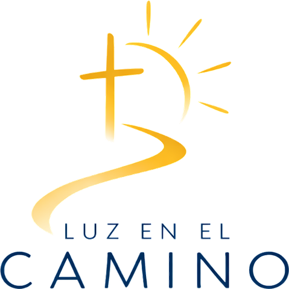

Un apostolado católico dedicado a acompañar y proteger a niñas, niños y adolescentes de familias migrantes en situación de vulnerabilidad en México.
Que ningún niño migrante en México pierda su infancia a causa de la migración.
Monterrey, Nuevo León, México.
La migración puede ser temporal.
La infancia no se puede recuperar.
Una familia puede estar de paso. Puede estar esperando. Puede no saber cuánto durará el camino. Pero un niño sigue necesitando seguridad, educación, juego, afecto, comunidad y esperanza. Por eso no podemos esperar a que termine el camino para proteger su infancia.
De quién hablamos cuando hablamos de esta obra.
Antes de ser migrante, extranjero, refugiado, desplazado o cualquier otra condición que describa su situación, hay un niño. Un niño que necesita jugar. Aprender. Sentirse seguro. Tener amigos. Ser escuchado. Estar con su familia. Soñar. Crecer. Ser niño.
Y su circunstancia no debería decidir cuánto de su infancia puede vivir.
Por qué existimos.
Cuando una familia migra, los adultos llevan consigo decisiones, responsabilidades, incertidumbres y problemas que muchas veces escapan de sus manos. Pero los niños viven esas circunstancias sin haberlas elegido.
El cambio constante de lugar puede interrumpir su educación, sus rutinas, sus vínculos, su estabilidad emocional y sus espacios de juego. La movilidad de una familia no debería convertirse en la inmovilidad del futuro de sus hijos.
Eso es lo que queremos proteger.
Creemos que cada niño posee una dignidad que no depende de su nacionalidad, sus documentos, su situación económica ni las circunstancias que atraviesa su familia. Y que proteger a un niño significa mucho más que mantenerlo físicamente a salvo: significa ayudarlo a continuar aprendiendo, a jugar, a relacionarse, a recuperar estabilidad, a fortalecer sus vínculos y a mirar hacia adelante.
De dónde nace esta obra.
Luz en el Camino nace de una convicción profundamente católica: cada persona posee una dignidad recibida de Dios. Por eso servimos al niño que tenemos delante, no a una categoría abstracta. No vemos solamente migrantes. Vemos personas. Vemos familias. Vemos niños. Y en el vulnerable reconocemos una llamada concreta a vivir la caridad.
Jesús fue niño. María fue madre. José fue custodio. Y la Sagrada Familia también tuvo que ponerse en camino para proteger la vida del Niño. Por eso, cuando miramos a una familia migrante, no miramos una realidad ajena al Evangelio. Donde hay un niño que necesita protección, hay una oportunidad de vivir la custodia, la caridad y la esperanza.
Seis verbos, y las cinco maneras concretas de proteger una infancia.
Porque el camino no termina después de una actividad.
Los Centros, y la red que los hace posibles.
Lugares donde niñas, niños y adolescentes pueden encontrar protección, acompañamiento, educación, juego y comunidad mientras sus familias atraviesan situaciones de movilidad. Hoy los Centros funcionan de manera informal, a través del contacto directo con quienes acompañan a estas familias. Ese contacto es la puerta de entrada.
No queremos construir solamente centros. Queremos construir lugares de pertenencia.
Luz en el Camino está concebido como una red, porque proteger la infancia requiere más que una sola organización. Requiere comunidades dispuestas a abrir sus puertas, profesionales dispuestos a poner su conocimiento al servicio, escuelas dispuestas a recibir, parroquias dispuestas a acompañar, refugios dispuestos a colaborar, empresas dispuestas a aportar y personas dispuestas a servir.
Ellos son los Guardianes de la Infancia.
Un Guardián no es simplemente alguien que quiere ayudar. Es alguien que decide estar preparado para acompañar. Que entiende que la vulnerabilidad de un niño exige prudencia. Que sabe escuchar. Que sabe respetar límites. Que sabe cuándo actuar. Y, sobre todo, que entiende que servir a un niño es una responsabilidad.
Cuando trabajamos con niños vulnerables, querer ayudar no es suficiente. La caridad necesita prudencia. El servicio necesita preparación. La confianza necesita responsabilidad. Por eso buscamos construir una cultura de protección infantil basada en protocolos, formación, supervisión, confidencialidad y canalización profesional.
Y sabemos cuáles son nuestros límites. Luz en el Camino no sustituye:
Lo que sí hacemos:
Nuestra promesa sobre cómo contamos esta obra.
No queremos que un niño sea conocido por su dolor. Queremos que sea conocido por su dignidad. No queremos exhibir vulnerabilidad: queremos protegerla. No queremos contar historias para provocar lástima, sino historias que despierten responsabilidad y esperanza.
Por la misma razón, no medimos esta obra en cifras que todavía no existen. Nuestro impacto no se mide solamente en personas atendidas.
Porque el verdadero resultado no es cuántos niños atendimos. Es cuántos niños pudieron seguir siendo niños.
Soñamos con una red nacional de comunidades capaces de acoger, proteger, promover, acompañar e integrar a niños y familias en contexto de movilidad. Una red que haga posible que, aun en medio de un camino incierto, ningún niño tenga que caminar solo.
Cuatro maneras de entrar. Todas empiezan con una conversación.
Hoy Luz en el Camino se articula a través del contacto directo. Si quieres servir, aliarte, apoyar o simplemente conocer la obra, ese contacto soy yo. Escríbeme y conversamos.
Luz en el Camino · Protegemos la infancia mientras el camino continúa.
Volver al portafolio